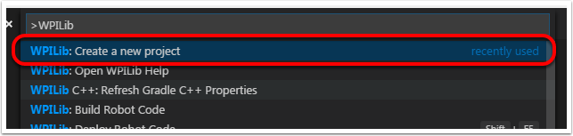
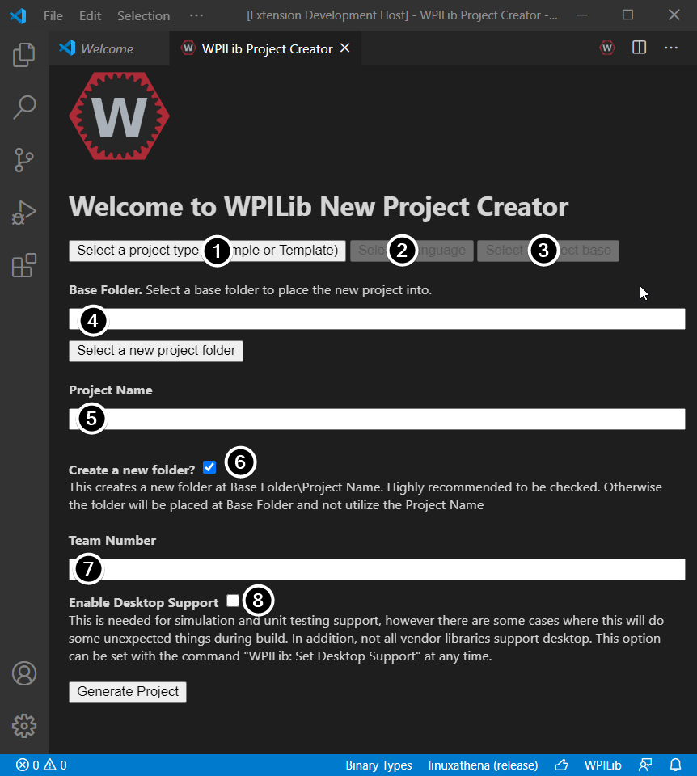
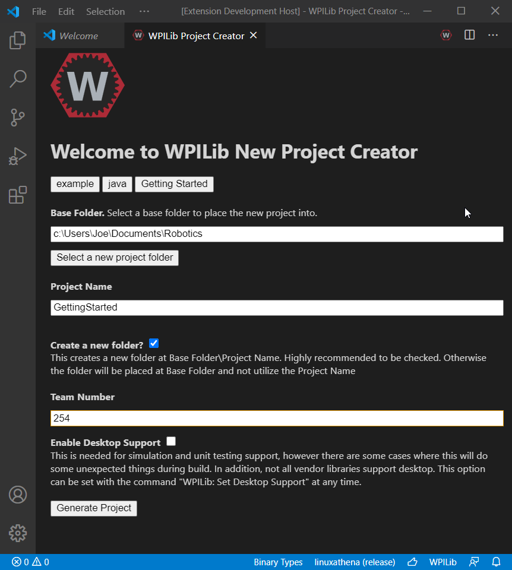
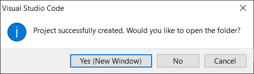
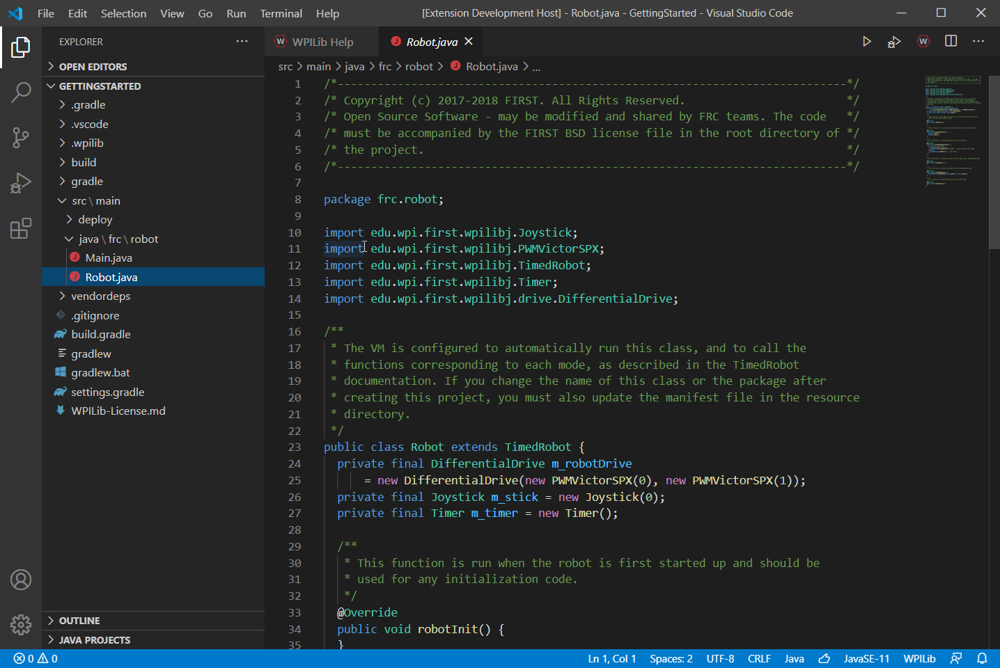

Creating a Robot Program
Once everything is installed, we’re ready to create a robot program. WPILib comes with several templates for robot programs. Use of these templates is highly recommended for new users; however, advanced users are free to write their own robot code from scratch.
Choosing a Base Class
To start a project using one of the WPILib robot program templates, users must first choose a base class for their robot. Users subclass these base classes to create their primary Robot class, which controls the main flow of the robot program. There are three choices available for the base class:
TimedRobot
The TimedRobot class is the base class recommended for most users. It provides control of the robot program through a collection of init(), periodic(), and exit() methods, which are called by WPILib during specific robot states (e.g. autonomous or teleoperated). During these calls, your code typically polls each input device and acts according to the data it receives. For instance, you would typically determine the position of the joystick and state of the joystick buttons on each call and act accordingly. The TimedRobot class also provides an example of retrieving autonomous routines through SendableChooser (Java/ C++
Note
A TimedRobot Skeleton template is available that removes some informative comments and the autonomous example. You can use this if you’re already familiar with TimedRobot. The example shown below is of TimedRobot Skeleton.
7import edu.wpi.first.wpilibj.TimedRobot;
8
9/**
10 * The VM is configured to automatically run this class, and to call the functions corresponding to
11 * each mode, as described in the TimedRobot documentation. If you change the name of this class or
12 * the package after creating this project, you must also update the build.gradle file in the
13 * project.
14 */
15public class Robot extends TimedRobot {
16 /**
17 * This function is run when the robot is first started up and should be used for any
18 * initialization code.
19 */
20 @Override
21 public void robotInit() {}
22
23 @Override
24 public void robotPeriodic() {}
25
26 @Override
27 public void autonomousInit() {}
28
29 @Override
30 public void autonomousPeriodic() {}
31
32 @Override
33 public void teleopInit() {}
34
35 @Override
36 public void teleopPeriodic() {}
37
38 @Override
39 public void disabledInit() {}
40
41 @Override
42 public void disabledPeriodic() {}
43
44 @Override
45 public void testInit() {}
46
47 @Override
48 public void testPeriodic() {}
49
50 @Override
51 public void simulationInit() {}
52
53 @Override
54 public void simulationPeriodic() {}
55}
5#include "Robot.h"
6
7void Robot::RobotInit() {}
8void Robot::RobotPeriodic() {}
9
10void Robot::AutonomousInit() {}
11void Robot::AutonomousPeriodic() {}
12
13void Robot::TeleopInit() {}
14void Robot::TeleopPeriodic() {}
15
16void Robot::DisabledInit() {}
17void Robot::DisabledPeriodic() {}
18
19void Robot::TestInit() {}
20void Robot::TestPeriodic() {}
21
22void Robot::SimulationInit() {}
23void Robot::SimulationPeriodic() {}
24
25#ifndef RUNNING_FRC_TESTS
26int main() {
27 return frc::StartRobot<Robot>();
28}
29#endif
Periodic methods are called every 20 ms by default. This can be changed by calling the superclass constructor with the new desired update rate.
Danger
Changing your robot rate can cause some unintended behavior (loop overruns). Teams can also use Notifiers to schedule methods at a custom rate.
public Robot() {
super(0.03); // Periodic methods will now be called every 30 ms.
}
Robot() : frc::TimedRobot(30_ms) {}
RobotBase
The RobotBase class is the most minimal base-class offered, and is generally not recommended for direct use. No robot control flow is handled for the user; everything must be written from scratch inside the startCompetition() method. The template by default showcases how to process the different operation modes (teleop, auto, etc).
Note
A RobotBase Skeleton template is available that offers a blank startCompetition() method.
Command Robot
The Command Robot framework adds to the basic functionality of a Timed Robot by automatically polling inputs and converting the raw input data into events. These events are tied to user code, which is executed when the event is triggered. For instance, when a button is pressed, code tied to the pressing of that button is automatically called and it is not necessary to poll or keep track of the state of that button directly. The Command Robot framework makes it easier to write compact easy-to-read code with complex behavior, but requires an additional up-front time investment from a programmer in order to understand how the Command Robot framework works.
Teams using Command Robot should see the Command-Based Programming Tutorial.
Romi
Teams using a Romi should use the Romi - Timed or Romi - Command Bot template.
Romi - Timed
The Romi - Timed template provides a RomiDrivetrain class that exposes an arcadeDrive(double xaxisSpeed, double zaxisRotate) method. It’s up to the user to feed this arcadeDrive function.
This class also provides functions for retrieving and resetting the Romi’s onboard encoders.
Romi - Command Bot
The Romi - Command Bot template provides a RomiDrivetrain subsystem that exposes an arcadeDrive(double xaxisSpeed, double zaxisRotate) method. It’s up to the user to feed this arcadeDrive function.
This subsystem also provides functions for retrieving and resetting the Romi’s onboard encoders.
Not Using a Base Class
If desired, users can omit a base class entirely and simply write their program in a main() method, as they would for any other program. This is highly discouraged - users should not “reinvent the wheel” when writing their robot code - but it is supported for those who wish to have absolute control over their program flow.
Warning
Users should not modify the main() method of a robot program unless they are absolutely sure of what they are doing.
Creating a New WPILib Project
Once we’ve decided on a base class, we can create our new robot project. Bring up the Visual Studio Code command palette with Ctrl+Shift+P. Then, type “WPILib” into the prompt. Since all WPILib commands start with “WPILib”, this will bring up the list of WPILib-specific VS Code commands. Now, select the Create a new project command:
This will bring up the “New Project Creator Window:”
The elements of the New Project Creator Window are explained below:
Project Type: The kind of project we wish to create. This can be an example project, or one of the project templates provided by WPILib. Templates exist for each of the robot base classes. Additionally, a template exists for Command-based projects, which are built on the
TimedRobotbase class but include a number of additional features - this type of robot program is highly recommended for new teams.Language: This is the language (C++ or Java) that will be used for this project.
Base Folder: If this is a template project, this specifies the type of template that will be used.
Project Location: This determines the folder in which the robot project will be located.
Project Name: The name of the robot project. This also specifies the name that the project folder will be given if the Create New Folder box is checked.
Create a New Folder: If this is checked, a new folder will be created to hold the project within the previously-specified folder. If it is not checked, the project will be located directly in the previously-specified folder. An error will be thrown if the folder is not empty and this is not checked.
Team Number: The team number for the project, which will be used for package names within the project and to locate the robot when deploying code.
Enable Desktop Support: Enables unit test and simulation. While WPILib supports this, third party software libraries may not. If libraries do not support desktop, then your code may not compile or may crash. It should be left unchecked unless unit testing or simulation is needed and all libraries support it.
Once all the above have been configured, click “Generate Project” and the robot project will be created.
Note
Any errors in project generation will appear in the bottom right-hand corner of the screen.
An example after all options are selected is shown below.
Opening The New Project
After successfully creating your project, VS Code will give the option of opening the project as shown below. We can choose to do that now or later by typing Ctrl+K then Ctrl+O (or just Command+O on macOS) and select the folder where we saved our project.
Once opened we will see the project hierarchy on the left. Double clicking on the file will open that file in the editor.
C++ Configurations (C++ Only)
For C++ projects, there is one more step to set up IntelliSense. Whenever we open a project, we should get a pop-up in the bottom right corner asking to refresh C++ configurations. Click “Yes” to set up IntelliSense.